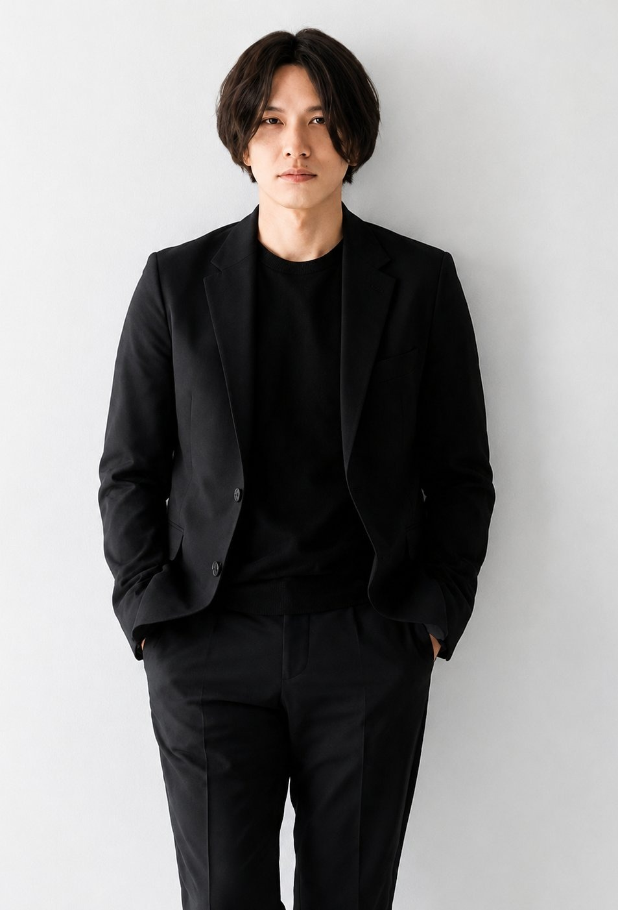

PROMOTION
チラシ
View →
hayato

Physical Therapist & Designer
チラシ・図解・スライド・SNS画像まで、Canvaを活用して幅広く制作しています。
医療や健康の専門知識を活かし、"伝わる"デザインで想いをカタチにします。
PROMOTION
View →
MEDICAL
View →
INFOGRAPHIC
View →
PRESENTATION
View →
SOCIAL
View →
BUSINESS
View →

ABOUT
Physical Therapist & Designer
理学療法士として医療・健康の現場に携わりながら、Canvaを用いたデザイン制作を行っています。臨床で培った「相手に分かりやすく伝える」視点を強みに、チラシ・図解・スライド・SNS画像まで幅広く手がけています。専門知識を持つからこそ届けられる、正確で"伝わる"デザインを大切にしています。
「誰に何を届けるか」を起点に、情報の優先順位を整理してから手を動かします。
医学的に正確でありながら、専門外の人にもやさしく伝わる表現を追求します。
情報を詰め込みすぎず、見た瞬間に内容が掴めるシンプルさを心がけています。